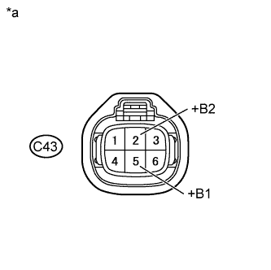

DTC P0403 Exhaust Gas Recirculation Control Circuit |
| DTC No. | DTC Detection Condition | Trouble Area |
| P0403 | Open or short in the EGR valve circuit (1 trip detection logic). |
|
| Frequency of Operation | Continuous |
| Tester Display | Description |
| NORMAL |
|
| ABNORMAL |
|
| INCOMPLETE |
|
| UNKNOWN |
|
| 1.PERFORM ACTIVE TEST USING INTELLIGENT TESTER (OPERATE EGR VALVE) |
Connect the intelligent tester to the DLC3.
Start the engine and warm it up until the engine coolant temperature reaches 75°C (167°F) or higher.
Turn the tester on.
Enter the following menus: Powertrain / Engine and ECT / Active Test / Control the EGR Step Position.
Confirm that Throttle Idle Position is ON and check the engine idling condition and the value of MAP in the Data List while performing the Active Test.
| - | EGR Step Position (Active Test) | |
| Step 0 | Step 0 to 30 | |
| Idling condition | Steady idling | Idling changes from steady to rough idling or engine stalls |
| MAP (Data List) | 20 to 40 kPa (150 to 300 mmHg) | MAP value is at least 10 kPa (75 mmHg) higher than when EGR valve is fully closed |
|
| ||||
| OK | ||
| ||
| 2.INSPECT EGR VALVE ASSEMBLY |
Inspect the EGR valve assembly (Click here).
|
| ||||
| OK | |
| 3.INSPECT EGR VALVE ASSEMBLY (+B OR +B2 VOLTAGE) |
|  |
Disconnect the EGR valve connector.
Measure the voltage according to the value(s) in the table below.
| Tester Connection | Switch Condition | Specified Condition |
| C43-5 (+B1) - Body ground | Engine switch on (IG) | 11 to 14 V |
| C43-2 (+B2) - Body ground | Engine switch on (IG) | 11 to 14 V |
| *a | Front view of wire harness connector (to EGR Valve Assembly) |
Reconnect the EGR valve connector.
|
| ||||
| OK | |
| 4.CHECK HARNESS AND CONNECTOR (ECM - EGR VALVE) |
Disconnect the EGR valve connector.
Disconnect the ECM connector.
Measure the resistance according to the value(s) in the table below.
| Tester Connection | Condition | Specified Condition |
| C28-23 (EGR1) - C43-4 (EGR1) | Always | Below 1 Ω |
| C28-36 (EGR2) - C43-3 (EGR2) | Always | Below 1 Ω |
| C28-30 (EGR3) - C43-6 (EGR3) | Always | Below 1 Ω |
| C28-24 (EGR4) - C43-1 (EGR4) | Always | Below 1 Ω |
| Tester Connection | Condition | Specified Condition |
| C28-23 (EGR1) or C43-4 (EGR1) - Body ground | Always | 10 kΩ or higher |
| C28-36 (EGR2) or C43-3 (EGR2) - Body ground | Always | 10 kΩ or higher |
| C28-30 (EGR3) or C43-6 (EGR3) - Body ground | Always | 10 kΩ or higher |
| C28-24 (EGR4) or C43-1 (EGR4) - Body ground | Always | 10 kΩ or higher |
Reconnect the EGR valve connector.
Reconnect the ECM connector.
|
| ||||
| OK | |
| 5.CHECK WHETHER DTC OUTPUT RECURS (DTC P0403) |
Connect the intelligent tester to the DLC3.
Turn the engine switch on (IG) and turn the tester on.
Clear DTCs (Click here).
Drive the vehicle in accordance with the driving pattern described in Confirmation Driving Pattern.
Confirm that no DTC is output using the intelligent tester.
| Result | Proceed to |
| DTC P0403 output | A |
| No DTC output | B |
|
| ||||
| A | ||
| ||
| 6.CHECK HARNESS AND CONNECTOR (NO. 1 INTEGRATION RELAY - EGR VALVE) |
Disconnect the EGR valve connector.
Remove the No. 1 integration relay from engine room relay block.
Measure the resistance according to the value(s) in the table below.
| Tester Connection | Condition | Specified Condition |
| 1B-4 - C43-5 (+B1) | Always | Below 1 Ω |
| 1B-4 - C43-2 (+B2) | Always | Below 1 Ω |
| Tester Connection | Condition | Specified Condition |
| 1B-4 or C43-5 (+B1) - Body ground | Always | 10 kΩ or higher |
| 1B-4 or C43-2 (+B2) - Body ground | Always | 10 kΩ or higher |
Reconnect the EGR valve connector.
Reinstall the No. 1 integration relay.
|
| ||||
| OK | ||
| ||